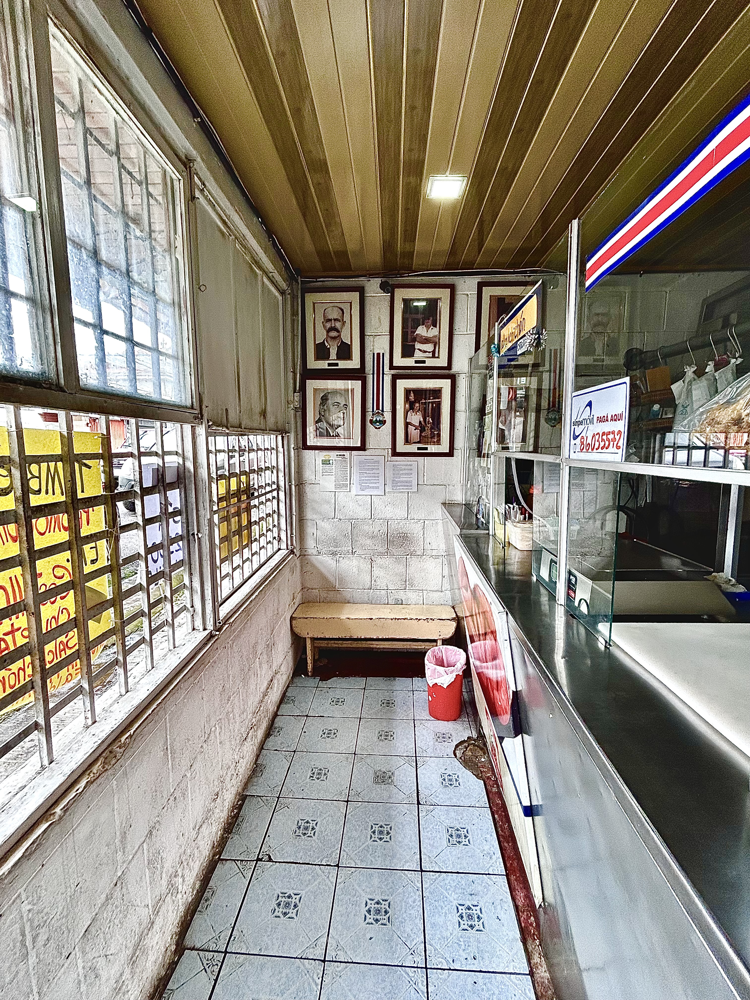

NUESTROS COMIENZOS
Una tradición que comenzó en familia
La Carnicería Bigotes de la Familia Solano, fue fundada en al año 1890, por el señor Benjamín Solano, nativo de Vásquez de Coronado. Su deseo fue instalar una carnicería que vendiera solamente productos de cerdo. Fue así como elaboró una formula casera para preparar el chorizo, la cual dio resultado y fue muy bien aceptada por los clientes de la zona del cantón de Vásquez de Coronado.
Al morir Don Benjamín, el pionero y fundador de la carnicería, se la hereda a uno de sus hijos, el señor Miguel Solano, quien la asume. Al morir Miguel Solano y no tener herederos hijos varones, es Don Beto quien continúa la tradición de su Padre, con la exclusividad del famoso chorizo de la casa, exclusivo de cerdo y consolida la tradición de la Empresa netamente de la Familia Solano.
Al fallecer Don Beto, queda como propietaria la señora Teresa Araya, su viuda, pero en realidad el negocio es administrado por su nieta María del Rocío Barrantes Solano.
Por la calidad de sus productos desde 1890 a la fecha, cubre un mercado muy amplio, que abarca el área metropolitana y otras provincias. Inclusive el chorizo de la casa es tan famoso, que ha sido llevado por sus clientes a otros países, quienes, al regresar a nuestro país, han continuado con su lealtad a nuestra empresa o emprendimiento familiar y a nuestros productos.
LO QUE NOS REPRESENTA
Nuestros valores
Calidad
Seleccionamos nuestros productos buscando siempre ofrecer la mejor calidad.
Tradición
Conservamos las costumbres y conocimientos que han pasado de generación en generación.
Confianza
Creemos en relaciones duraderas con nuestros clientes y nuestra comunidad.